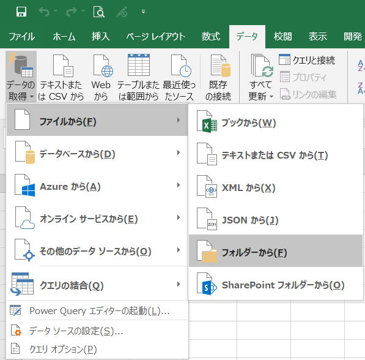

PowerQueryの強力な機能をVBAから利用する方法

Excel2016より標準搭載されたPowerQueryはとても強力な機能ですが、
使える環境が限られるので、頻繁に使われだすのはこれからになると思います。
ここでは、PowerQueryの優れた機能をVBAから利用する場合の手順を説明したものです。
PowerQueryの活用方法の一つとして、ここに記載しておきます。
・手動での操作を確認
・「マクロの記録」でVBAを確認
・VBAの要所の文法を調べる
・VBAを書いてみる
このような順で進めると良いでしょう。
以下、この順に説明します。
説明に使用するデータ
フォルダ内の複数ファイルのデータを1シートに集める場合を例に説明しています。
201805.xlsx
201806.xlsx
・・・
一つのExcelファイルには、
「Sheet1」に以下のデータが月別に入っています。
「Sheet1」のデータを一つのシートに集めます。
あくまで、PowerQueryの活用方法の説明としての題材となります。
PowerQueryの操作方法
列の削除等の編集をする場合は、「統合および編集」をすることになりますが、
今回は、あくまでVBAの参考なので、単純な操作にしています。
数ファイルであれば、本当に一瞬でデータが結合されます。
ただし、毎回この操作をしていたのでは、、、
もちろん、一度取り込んでしまえば、簡単に更新はできます。
フォルダのパスが変更になる時はどうしたら、、、
もちろん、そのような対応方法もPowerQueryにはあるにはありますが、
ここでは、VBAとしてこの機能を使えるようにしてしまえという事になります。
PowerQueryのマクロの記録
一度では完成しない場合も多いと思いますので、
一度完成させた後で、それをお手本に操作すると良いでしょう。
以下は、マクロの記録で作成されたVBAコードになります。
Sub Macro1()
'
' Macro1 Macro
'
'
ActiveWorkbook.Queries.Add Name:="サンプル ファイルの変換", Formula:=
_
"let" & Chr(13) & "" & Chr(10) & " ソース = Excel.Workbook(パラメーター1, null, true)," & Chr(13) & "" & Chr(10) & " Sheet1_Sheet = ソース{[Item=""Sheet1"",Kind=""Sheet""]}[Data]," & Chr(13) & "" & Chr(10) & " 昇格されたヘッダー数 = Table.PromoteHeaders(Sheet1_Sheet, [PromoteAllScalars=true])" & Chr(13) & "" & Chr(10) & "in" & Chr(13) & "" & Chr(10) & " 昇格されたヘッダー数"
ActiveWorkbook.Queries.Add Name:="パラメーター1", Formula:= _
"#""サンプル ファイル"" meta [IsParameterQuery=true, BinaryIdentifier=#""サンプル ファイル"", Type=""Binary"", IsParameterQueryRequired=true]"
ActiveWorkbook.Queries.Add Name:="サンプル ファイル", Formula:= _
"let" & Chr(13) & "" & Chr(10) &
" ソース = Folder.Files(""D:\Excel\マクロVBA入門\月別データ""),"
& Chr(13) & "" & Chr(10) & " ナビゲーション1 =
ソース{0}[Content]" & Chr(13) & "" & Chr(10) &
"in" & Chr(13) & "" & Chr(10) & " ナビゲーション1"
ActiveWorkbook.Queries.Add Name:="ファイルの変換", Formula:= _
"let" & Chr(13) & "" & Chr(10) & " ソース = (パラメーター1) => let" & Chr(13) & "" & Chr(10) & " ソース = Excel.Workbook(パラメーター1, null, true)," & Chr(13) & "" & Chr(10) & " Sheet1_Sheet = ソース{[Item=""Sheet1"",Kind=""Sheet""]}[Data]," & Chr(13) & "" & Chr(10) & " 昇格されたヘッダー数 = Table.PromoteHeaders(Sheet1_Sheet, [PromoteAllScalars=true])" & Chr(13) & "" & Chr(10) & " in" & Chr(13) & "" & Chr(10) & " 昇格されたヘッダー数" & Chr(13) & "" & Chr(10) & "in" & Chr(13) & "" & Chr(10) & " ソース"
ActiveWorkbook.Queries.Add Name:="月別データ", Formula:= _
"let" & Chr(13) & "" & Chr(10) &
" ソース = Folder.Files(""D:\Excel\マクロVBA入門\月別データ""),"
& Chr(13) & "" & Chr(10) & " #""フィルター選択された非表示の
File1"" = Table.SelectRows(ソース, each [Attributes]?[Hidden]? <>
true)," & Chr(13) & "" & Chr(10) & " カスタム関数の呼び出し1
= Table.AddColumn(#""フィルター選択された非表示の File1"", ""ファイルの変換"",
each ファイルの変換([Content]))," & Chr(13) & "" &
Chr(10) & " #""名前が変更された列 1"" = Table.RenameColumns(カスタム関数の呼び出し1,
{""Name"", ""Source.Name""}),"
& Chr(13) & "" & Chr(10) & " 削除された他の列1
= Table.Select" & _
"Columns(#""名前が変更された列 1"", {""Source.Name"", ""ファイルの変換""})," & Chr(13) & "" & Chr(10) & " 展開されたテーブル列1 = Table.ExpandTableColumn(削除された他の列1, ""ファイルの変換"", Table.ColumnNames(ファイルの変換(#""サンプル ファイル"")))," & Chr(13) & "" & Chr(10) & " 変更された型 = Table.TransformColumnTypes(展開されたテーブル列1,{{""Source.Name"", type text}, {""日付"", type date}, {""部署"", type text}, {""担当"", type text}, {""売上数"", Int64.Type}, {""売上金額"", Int64.Type}})" & Chr(13) & "" & Chr(10) & "i" & _
"n" & Chr(13) & "" & Chr(10) & " 変更された型" & _
""
Workbooks("Book1.xlsm").Connections.Add2 "クエリ - サンプル ファイルの変換", _
"ブック内の 'サンプル ファイルの変換' クエリへの接続です。", _
"OLEDB;Provider=Microsoft.Mashup.OleDb.1;Data Source=$Workbook$;Location=""サンプル ファイルの変換"";Extended Properties=""""" _
, "SELECT * FROM [サンプル ファイルの変換]", 2
Workbooks("Book1.xlsm").Connections.Add2 "クエリ - パラメーター1",
_
"ブック内の 'パラメーター1' クエリへの接続です。", _
"OLEDB;Provider=Microsoft.Mashup.OleDb.1;Data Source=$Workbook$;Location=パラメーター1;Extended Properties=""""" _
, "SELECT * FROM [パラメーター1]", 2
Workbooks("Book1.xlsm").Connections.Add2 "クエリ - サンプル ファイル",
_
"ブック内の 'サンプル ファイル' クエリへの接続です。", _
"OLEDB;Provider=Microsoft.Mashup.OleDb.1;Data Source=$Workbook$;Location=""サンプル ファイル"";Extended Properties=""""" _
, "SELECT * FROM [サンプル ファイル]", 2
Workbooks("Book1.xlsm").Connections.Add2 "クエリ - ファイルの変換",
_
"ブック内の 'ファイルの変換' クエリへの接続です。", _
"OLEDB;Provider=Microsoft.Mashup.OleDb.1;Data Source=$Workbook$;Location=ファイルの変換;Extended Properties=""""" _
, "SELECT * FROM [ファイルの変換]", 2
ActiveWorkbook.Worksheets.Add
With ActiveSheet.ListObjects.Add(SourceType:=0, Source:= _
"OLEDB;Provider=Microsoft.Mashup.OleDb.1;Data Source=$Workbook$;Location=月別データ;Extended Properties=""""" _
, Destination:=Range("$A$1")).QueryTable
.CommandType = xlCmdSql
.CommandText = Array("SELECT * FROM [月別データ]")
.RowNumbers = False
.FillAdjacentFormulas = False
.PreserveFormatting = True
.RefreshOnFileOpen = False
.BackgroundQuery = True
.RefreshStyle = xlInsertDeleteCells
.SavePassword = False
.SaveData = True
.AdjustColumnWidth = True
.RefreshPeriod = 0
.PreserveColumnInfo = True
.ListObject.DisplayName = "月別データ"
.Refresh BackgroundQuery:=False
End With
End Sub
まずは、簡単にメソッドの構文を確認してから、このコードを見やすく整形して使いまわせるようにしていきます。
PowerQueryのVBA文法
その中で、実際に動作が行われている命令、つまりメソッドは、
ActiveWorkbook.Queries.Add
Workbooks("Book1.xlsm").Connections.Add2
ActiveSheet.ListObjects.Add
この3つがあることが分かります。
そこで、これらを調べてみましょう。
Workbook.Queries.Add(Name, Formula, Description)
| 名前 | 必須/オプション | データ型 | 説明 |
| Name | 必須 | String | クエリの名前。 |
| Formula | 必須 | String | 新しいクエリの Power Query M数式。 |
| Description | 省略可能 | Variant | クエリの説明。 |
戻り値は、WorkbookQuery
Workbook.Add2(Name, Description, ConnectionString, CommandText, lcmdtype, createmodelconnection, importrelationships)
| 名前 | 必須/オプション | データ型 | 説明 |
| 名前 | 必須 | String | 接続の名前を指定します。 |
| Description | 必須 | String | 接続の簡単な説明を指定します。 |
| ConnectionString | 必須 | バリアント型 | 接続文字列を指定します。 |
| CommandText | 必須 | バリアント型 | 接続を作成するコマンド テキストを指定します。 |
| lcmdtype | Optional | Variant | コマンドの種類を指定します。 |
| createmodelconnection | 省略可能 | Boolean | PowerPivot モデルへの接続を作成するかどうかを指定します。 |
| importrelationships | 省略可能 | Boolean | 既存のリレーションシップをインポートするかどうかを指定します。 |
戻り値は、WorkbookConnection
オブジェクトブラウザで違いを見てみると、
つまり、上記の構文はAdd2メソッドになります。
つまり、Docsの記載ミスと思われます。
WorkSheet.追加(SourceType, Source, linksource, xllist thasheaders, Destination, TableStyleName)
| 名前 | 必須 / オプション | データ型 | 説明 |
| SourceType | 省略可能 | XlListObjectSourceType | クエリで使用されるソースの種類を指定します。 xlSrcExternal : 外部データ ソース (Microsoft SharePoint Foundation サイト) xlSrcModel :PowerPivot モデル xlSrcQuery :クエリ xlSrcRange : 範囲 xlSrcXml : XML |
| Source | Optional | Variant | SourceType = xlsrcrangeデータソースを表す Range オブジェクトを指定します。 省略した場合、_ソース_は、リスト範囲検出コードによって返される範囲に既定で設定されます。 SourceType = xlsrcexternal: ソースへの接続を指定する文字列値の配列。次の要素が含まれています。 0 - SharePoint サイトの URL 1 - ListName 2 - ViewGUID |
| LinkSource | 省略可能 | Boolean | 外部データ ソースを ListObject オブジェクトにリンクするかどうかを指定します。 _SourceType_がxlsrcexternalの場合、既定値はTrueになります。 _SourceType_がxlsrcrangeの場合は無効です。 省略した場合は、エラーが返されます。 |
| XlListObjectHasHeaders | Optional | Variant | インポートされているデータに列ラベルがあるかどうかを示すxlyes noguess定数を指定します。 _ソース_にヘッダーが含まれていない場合、Excel は自動的にヘッダーを生成します。 既定値はxlguessです。 |
| Destination | 省略可能 | Variant | 新しいリストオブジェクトの左上隅のリンク先として単一セル参照を指定するRangeオブジェクト。 Range オブジェクトが複数のセルを参照する場合は、エラーが生成されます。 _SourceType_がxlsrcexternalに設定されている場合は、 _Destination_引数を指定する必要があります。 _SourceType_がxlsrcrange出力に設定されている場合、引数_Destination_は無視されます。 移動先の範囲は、_式_で指定されたlistobjectsコレクションが含まれているワークシート上にある必要があります。 新しい列は、新しいリストに適合するように_コピー先_に挿入されます。 したがって、既存のデータは上書きされません。 |
| TableStyleName | 省略可能 | 文字列型 (String) | TableStyle の名前。 たとえば、"TableStyleLight1" のようになります。 |
戻り値は、新しいリストオブジェクトを表すListObjectオブジェクト。
WorkbookQuery
Sub クエリ出力()
Dim wb As Workbook
Set wb = ActiveWorkbook
Dim qry As WorkbookQuery
For Each qry In wb.Queries
Debug.Print qry.Name
Debug.Print qry.Formula
Next
End Sub
クエリを全てイミィディエイトに出力しています。
Sub 接続出力()
Dim wb As Workbook
Set wb = ActiveWorkbook
Dim con As WorkbookConnection
On Error Resume Next
For Each con In wb.Connections
Debug.Print con.Name
Debug.Print con.Description
'ODBC
Debug.Print con.ODBCConnection.Connection
Debug.Print con.ODBCConnection.CommandText
Debug.Print con.ODBCConnection.CommandType
'OLEDB
Debug.Print con.OLEDBConnection.Connection
Debug.Print con.OLEDBConnection.CommandText
Debug.Print con.OLEDBConnection.CommandType
Next
On Error GoTo 0
End Sub
ODBCまたはOLEDBのどちらかでエラーになるので、On Errorを入れています。
接続を全てイミィディエイトに出力しています。
CommandTextを取得して、SQL文の文字列変更後に更新することもできます。
マクロの記録のVBAと合わせて設定情報を確認しつつVBAを変更していきます。
PowerQueryの機能を利用したマクロVBA
以下のVBAでは、いわばPowerQueryはその機能だけを利用しています。
つまり、PowerQueryは使い捨てていることになります。
マクロVBAでデータを集める部分のみPowerQueryの機能を利用して、その後はクエリも接続も消しています。
Sub Macro1()
'対象のフォルダ選択
Dim strFolder As String
With Application.FileDialog(msoFileDialogFolderPicker)
.AllowMultiSelect = False
.Title = "フォルダの選択"
If Not .Show Then
Exit Sub
End If
strFolder = .SelectedItems(1)
End With
Application.ScreenUpdating = False
Application.Calculation = xlCalculationManual
On Error GoTo ErrExit
'出力ブック・シートの指定
Dim wb As Workbook
Set wb = ActiveWorkbook
Dim ws As Worksheet
Set ws = ActiveSheet
ws.Cells.Clear
'ブックのクエリを全削除、もちろん適宜変更
Dim qry As WorkbookQuery
For Each qry In wb.Queries
qry.Delete
Next
'クエリの数式文字列作成
Dim qryStr1 As String
Dim qryStr2 As String
Dim qryStr3 As String
Dim qryStr4 As String
Dim qryStr5 As String
qryStr1 = "let ソース = Excel.Workbook(QUERY2, null, true), Sheet1_Sheet = ソース{[Item=""Sheet1"",Kind=""Sheet""]}[Data], 昇格されたヘッダー数 = Table.PromoteHeaders(Sheet1_Sheet, [PromoteAllScalars=true]) in 昇格されたヘッダー数"
qryStr2 = "#""QUERY3"" meta [IsParameterQuery=true,
BinaryIdentifier=#""QUERY3"", Type=""Binary"", IsParameterQueryRequired=true]"
qryStr3 = "let ソース = Folder.Files(""" & _
strFolder & _
"""), ナビゲーション1 = ソース{0}[Content] in ナビゲーション1"
qryStr4 = "let ソース = (QUERY2) => let ソース = Excel.Workbook(QUERY2, null, true), Sheet1_Sheet = ソース{[Item=""Sheet1"",Kind=""Sheet""]}[Data], 昇格されたヘッダー数 = Table.PromoteHeaders(Sheet1_Sheet, [PromoteAllScalars=true]) in 昇格されたヘッダー数 in ソース"
qryStr5 = "let ソース = Folder.Files(""" & _
strFolder & _
"""), #""フィルター選択された非表示の File1""
= Table.SelectRows(ソース, each [Attributes]?[Hidden]? <> true), カスタム関数の呼び出し1
= Table.AddColumn(#""フィルター選択された非表示の File1"", ""QUERY4"", each QUERY4([Content])), #""名前が変更された列 1"" = Table.RenameColumns(カスタム関数の呼び出し1, {""Name"", ""Source.Name""}), 削除された他の列1 = Table.Select" & "Columns(#""名前が変更された列 1"", {""Source.Name"", ""QUERY4""}), 展開されたテーブル列1 = Table.ExpandTableColumn(削除された他の列1, ""QUERY4"", Table.ColumnNames(QUERY4(#""QUERY3""))), 変更された型 = Table.TransformColumnTypes(展開されたテーブル列1,{{""Source.Name"", type text}, {""日付"", type date}, {""部署"", type text}, {""担当"", type text}, {""売上数"", Int64.Type}, {""売上金額"", Int64.Type}}) i" & "n 変更された型" & ""
'ブックにクエリ追加
With wb.Queries
.Add Name:="QUERY1", Formula:=qryStr1
.Add Name:="QUERY2", Formula:=qryStr2
.Add Name:="QUERY3", Formula:=qryStr3
.Add Name:="QUERY4", Formula:=qryStr4
.Add Name:="QUERY5", Formula:=qryStr5
End With
'接続文字列作成
Dim i As Long
Dim Provider As String
For i = 1 To 4
Provider = _
"OLEDB;" & _
"Provider=Microsoft.Mashup.OleDb.1;" & _
"Data Source=$Workbook$;" & _
"Location=QUERY" & i & ";" & _
"Extended Properties="""""
wb.Connections.Add2 _
"QUERY" & i, _
"接続" & i, _
Provider, _
"SELECT * FROM [QUERY" & i & "]", _
2
Next
'クエリーテーブル追加
With ws.ListObjects.Add(SourceType:=0, _
Source:="OLEDB;" & _
"Provider=Microsoft.Mashup.OleDb.1;" & _
"Data Source=$Workbook$;" & _
"Location=QUERY5;Extended Properties=""""", _
Destination:=Range("$A$1"))
With .QueryTable
.CommandType = xlCmdSql
.CommandText = Array("SELECT * FROM [QUERY5]")
.RowNumbers = False
.FillAdjacentFormulas = False
.PreserveFormatting = True
.RefreshOnFileOpen = False
.BackgroundQuery = True
.RefreshStyle = xlInsertDeleteCells
.SavePassword = False
.SaveData = True
.AdjustColumnWidth = True
.RefreshPeriod = 0
.PreserveColumnInfo = True
.ListObject.DisplayName = "適当な名前"
.Refresh BackgroundQuery:=False
End With
'テーブルを範囲に変換
.TableStyle = ""
.Unlist
End With
'ブックのクエリを全削除、もちろん適宜変更
For Each qry In wb.Queries
qry.Delete
Next
Application.Calculation = xlCalculationAutomatic
Application.ScreenUpdating = True
MsgBox "PowerQuery取込終了"
Exit Sub
ErrExit:
MsgBox "PowerQuery異常発生" & vbLf & vbLf & _
Err.Description
End Sub
VBAコードの細かい解説は省略します。
マクロの記録の元のVBAと比べながらVBAコードを読んでみてください。
処理の流れとしては、
・QueryのFormulaを作成し、Queries.Add
・接続文字列を作成し、Connections.Add2
・作成した接続でクエリテーブルを追加、ListObjects.Add
上記VBAコードの太字を中心に見ていくと流れがわかると思います。
これは説明していたらきりがありませんし、私もまだよく理解していません。
今後PowerQueryがVBAで頻繁に使われるようになった時には、解説できるようにしたいと思っています。
上記では、マクロの記録で作成されたものを一部変更しただけのものになります。
主な変更点は、
・Chr(13) & "" & Chr(10) 、これは改行なので不要
・クエリ名をVBAで扱いやすいように変更
改行は消す必要はないのですが、
ここでは掲載した時のゴチャゴチャ感を減らすために消したまでです。
その他の日本語が使われている部分も短くしたいところですが、マクロ記録と比較しやすいようにそのままにしてあります。
後々の変更を考えれば、そのまま残しておいた方が良いと思いでしょう。
PowerQueryについて
基本部分は、以前からあったQueryTable（テキストデータのインポート等）を強化したものと考えれば良いでしょう。
M言語を導入しエディタからM言語を自動生成されるようになっていて、この機能がとても優れていると思います。
特にテーブル機能と上手く連携していて、かなりスムーズに扱えるようになっていると感じます。
ADOを使いSQL発行するのと同じ考え方になります。
ただし、いずれにしても一つの言語になりますので、学習には相応の時間がかかるとは思います。
PowerQuryエディタの自動生成を上手く利用していくことでVBAでの活用範囲は広がるはずです。
これは、マクロの記録で作成されたVBAと同じだろうと思います。
今後、WEBや書籍でクエリの具体例と解説が増えてくるはずですので、それを基に作成するという使い方もできるようになってくるでしょう。
同じテーマ「マクロVBA技術解説」の記事
Byte配列と文字コード関数について
VBA+SeleniumBasicで検索順位チェッカー（改）
Applicationを省略できるApplicationのメソッド・プロパティ一覧
PowerQueryの強力な機能をVBAから利用する方法
ShapesとDrawingObjectsの相違点と使い方
新規挿入可能なシート名の判定
VBAにおける配列やコレクションの起点について
VBAのマルチステートメント（複数のステートメントを同じ行に）
クリップボードに2次元配列を作成してシートに貼り付ける
ユーザー定義型の制限とクラスとの使い分け
シングルクォートの削除とコピー（PrefixCharacter）
新着記事NEW ・・・新着記事一覧を見る
VBA100本ノック 100本目：WEBから100本ノックのリストを取得｜VBA練習問題（3月3日）
VBA100本ノック 99本目：自動席替え（行列と前後左右が全て違うように）｜VBA練習問題（3月2日）
VBA100本ノック 98本目：席替えルールが守られているか確認｜VBA練習問題（3月1日）
VBA100本ノック 97本目：Accessデータを取得（グループ集計）｜VBA練習問題（2月27日）
VBA100本ノック 96本目：Accessデータを取得（マスタ結合&抽出）｜VBA練習問題（2月26日）
VBA100本ノック 95本目：図形のテキストを検索するフォーム作成｜VBA練習問題（2月24日）
VBA100本ノック 94本目：表範囲からHTMLのtableタグを作成｜VBA練習問題（2月23日）
VBA100本ノック 93本目：複数ブックを連結して再分割｜VBA練習問題（2月22日）
VBA100本ノック 92本目：セルの色を16進で返す関数｜VBA練習問題（2月20日）
VBA100本ノック 91本目：時間計算（残業時間の月間合計）｜VBA練習問題（2月19日）
アクセスランキング ・・・ ランキング一覧を見る
1.最終行の取得（End,Rows.Count）｜VBA入門
2.RangeとCellsの使い方｜VBA入門
3.変数宣言のDimとデータ型｜VBA入門
4.マクロって何？VBAって何？｜VBA入門
5.Range以外の指定方法（Cells,Rows,Columns）｜VBA入門
6.セルのコピー&値の貼り付け（PasteSpecial）｜VBA入門
7.繰り返し処理（For Next)｜VBA入門
8.セルに文字を入れるとは（Range,Value）｜VBA入門
9.マクロはどこに書くの（VBEの起動）｜VBA入門
10.とにかく書いてみよう（Sub,End Sub）｜VBA入門
- ホーム
- マクロVBA応用編
- マクロVBA技術解説
- PowerQueryの強力な機能をVBAから利用する方法
このサイトがお役に立ちましたら「シェア」「Bookmark」をお願いいたします。
記述には細心の注意をしたつもりですが、
間違いやご指摘がありましたら、「お問い合わせ」からお知らせいただけると幸いです。
掲載のVBAコードは動作を保証するものではなく、あくまでVBA学習のサンプルとして掲載しています。
掲載のVBAコードは自己責任でご使用ください。万一データ破損等の損害が発生しても責任は負いません。